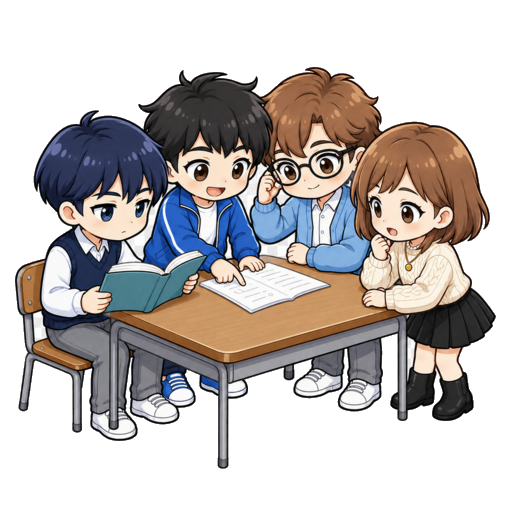

漢字を パーツに 分けて、組み立てて、しくみから おぼえる 学習アプリ。
プロトタイプ：1・2・3年生の 440字で おためし中
●の いみ（左から）： ぶんかい ・ くみたて ・ こうぞう ・ ぶしゅ ／ みどりの わくは テストで しゅうとくした かんじ
かんじマスターと 同じ 4つの グループ分け。グループの 中から ランダムに 出るよ。テストでは おぼえうたは おやすみ。
漢字の 分解と 字形には KanjiVG（KanjiVG project）を、部首番号と 画数には KANJIDIC2（EDRDG）を 使っています。どちらも Creative Commons 表示—継承（CC BY-SA）ライセンスで 公開されている データです。
学年・読み・例文は、TT-sensei の アプリ「かんじマスター」の 自作データを 使っています。唱え方と 説明は、このアプリのために 作った 独自の ものです。
KanjiVG の 分解は、そのまま「正解」として 出している わけでは ありません。小学生が 漢字の しくみを 分かるように、教材として 決めた 分け方を 固定で 出しています。